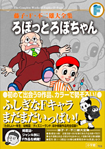

| |

＜よいこ、たのしい幼稚園、
幼稚園、たのしい一年生、
小学一年生、ディズニーランド
掲載集＞
定価：本体2,700円＋税
A5判／496ページ
好評発売中！
★は初めて単行本に収録される
作品です。
※収録内容は変更になる
場合があります。

|
＜ろぼっとろぼちゃん＞
| ★ろぼちゃんとうじょう（たのしい一年生1961年8月号） |
| ★あさがおを大きくしよう（たのしい一年生1961年9月号別冊付録） |
| ★ほんものになるカメラ（たのしい一年生1961年10月号） |
| ★なんでも動かすライト（たのしい一年生1961年11月号別冊付録） |
| ★サンタがくる夜（たのしい一年生1961年12月号） |
| ★ゆきの動物たち（たのしい一年生1962年1月号別冊付録） |
| ★迷子で迷子（たのしい一年生1962年2月号） |
| ★大きくなるガス（たのしい一年生1962年3月号） |
＜かばんのぱっく＞
| ★ふしぎなカバン（たのしい一年生1961年4月号） |
| ★パパをおむかえ（たのしい一年生1961年5月号） |
| ★おもちゃのゆうえんち（たのしい一年生1961年6月号） |
＜しゃぼんだまぽんちゃん＞
| ★しゃぼんだまで海へいこう（たのしい幼稚園1960年7月号） |
| ★海賊船とクジラとライオン（たのしい幼稚園1960年8月号） |
| ★にせものでまんいん（たのしい幼稚園1960年9月号） |
| ★飛行機ときょうそう（たのしい幼稚園1960年10月号） |
| ★しゃぼんだまロボット（たのしい幼稚園1960年11月号） |
★しゃぼんだまでサンタを助けよう
（たのしい幼稚園1960年12月号） |
＜スーパーじろう＞
| ★スーパーじろう誕生（よいこ1963年1月号） |
| ★空飛ぶおにいちゃん（よいこ1963年2月号） |
| ★消火をおてつだい（よいこ1963年3月号） |
| ★みんなおくります（幼稚園1963年4月号） |
| ★こいのぼり釣り（幼稚園1963年5月号） |
| ★飛行機ごっこ（幼稚園1963年6月号） |
| ★空き箱城の戦争（幼稚園1963年7月号） |
| ★らくらくハイキング（幼稚園1963年8月号） |
| ★ライオンを捕まえろ（幼稚園1963年9月号） |
| ★大物を釣ろう（幼稚園1963年10月号） |
| ★柿どろぼうをつかまえろ（幼稚園1963年11月号） |
| ★プレゼントをさがせ（幼稚園1963年12月号） |
＜ろぼっとたろう／スピードたろう＞
| ★ふしぎなぼうしをもらっちゃった（よいこ1963年4月号） |
| ★アフリカで動物見物（よいこ1963年5月号） |
| ★ちいさなたろうの大冒険（よいこ1963年6月号） |
| ★竜宮へいきたいたろうくん（よいこ1963年7月号） |
| ★ロープウェイ救出（よいこ1963年8月号） |
| ★ばんぼからのおくりもの（よいこ1963年9月号） |
| ★台風がきたぞ（よいこ1963年10月号） |
| ★あっというまに山登り（よいこ1963年11月号） |
| ★サンタクロースはきっとくる（よいこ1963年12月号） |
|
 |
＜チイちゃん（原作／高垣葵）＞
| ★おるすばん（幼稚園1961年6月号） |
| ★だめ！（幼稚園1961年7月号） |
| ★ボールとすいか（幼稚園1961年8月号） |
| ★にげたまつむし（幼稚園1961年9月号） |
| ★柿とおじいさん（幼稚園1961年10月号） |
| ★お母さんにも見せたい（幼稚園1961年11月号） |
| ★ちいちゃんとおにいちゃん（幼稚園1961年12月号） |
＜ピロンちゃん（原作／手塚治虫）＞
| ピロンちゃん（作／手塚治虫）（幼稚園1960年9月号） |
| ★エネルギー人をやっつけろ（幼稚園1960年10月号） |
| ★空飛ぶめだま（幼稚園1960年11月号） |
| ★さらわれたピロン（幼稚園1960年12月号） |
| ★まだら仮面あらわる（幼稚園1961年1月号） |
| ★ピロン、星の国に帰る（幼稚園1961年2月号） |
| ★星の谷の怪物（幼稚園1961年3月号） |
| ★空飛ぶマント（幼稚園1961年4月号） |
| ★ケガ人を運べ（幼稚園1961年5月号） |
| ★つかまったピロン（小学一年生1961年4月号） |
| ★ガムの身代わり（小学一年生1961年5月号） |
＜ベレーのしんちゃん＞
| ★ロボライト（ディズニーランド1965年3月号） |
| ★おてがら（ディズニーランド1965年4月号） |
| ★ふんわりがす（ディズニーランド1965年5月号） |
| ★まっすぐき（ディズニーランド1965年6月号） |
| ★言葉で動く車（ディズニーランド1965年7月号） |
| ★00かばん（ディズニーランド1965年8月号） |
| ★大きくなるきかい（ディズニーランド1965年9月号） |
| ★ロボット＝ポスト（ディズニーランド1965年10月号） |
| ★わかがえりきかい（ディズニーランド1965年11月号） |
| ★本物になる機械（ディズニーランド1965年12月号） |
| ★近道ドア（ディズニーランド1966年1月号） |
| ★プラボール（ディズニーランド1966年2月号） |
| ★ロボットつみ木（ディズニーランド1966年3月号） |
| ★モグ1号（ディズニーランド1966年4月号） |
★こいのぼりのヘリコプター
（ディズニーランド1966年5月号） |
| ★そらとぶテント（ディズニーランド1966年6月号） |
| ★水中おしゃぶり（ディズニーランド1966年7月号） |
| ★スピードリング（ディズニーランド1966年8月号） |
|